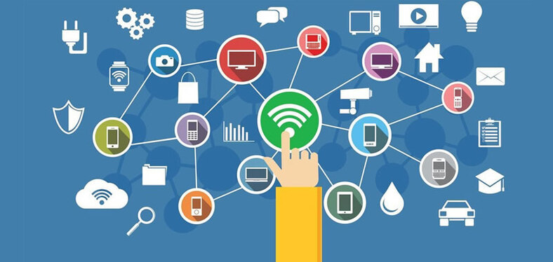
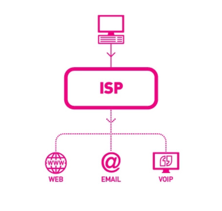
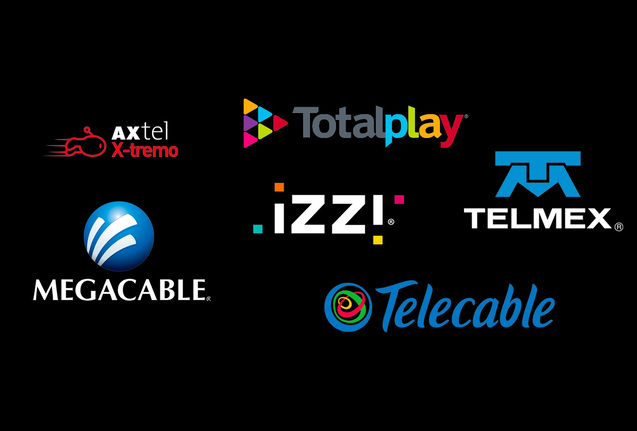
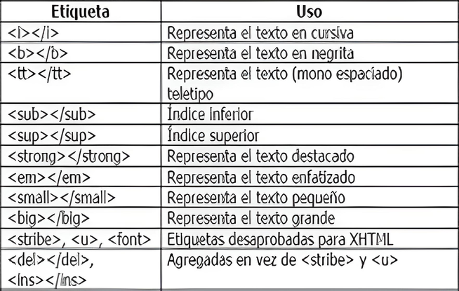
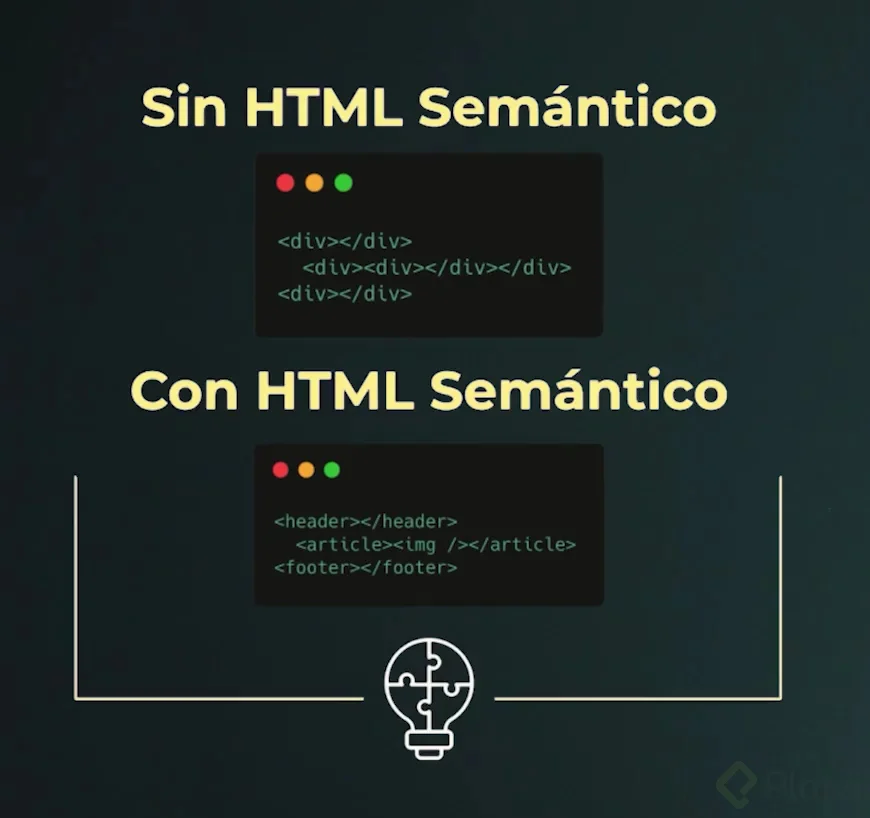
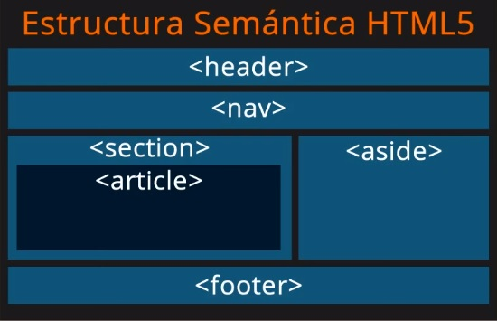

- ¿Qué es internet?
- ¿Qué es proveedor de internet?
- Tipos de proveedores de internet
- ¿Qué es la experiencia de usuario?
- ¿Qué es la interfaz de usuario?
- ¿Qué es el protocolo de internet?
- ¿Qué es HTML?
- ¿Qué es semántica HTML?
Internet es una red de computadoras interconectadas a nivel mundial en forma de tela de araña. Consiste de servidores (o "nodos") que proveen información a aproximadamente 100 millones de personas que están conectadas entre ellas a través de las redes de telefonía y cable.
Los proveedores de servicios de Internet o más comúnmente conocidos por sus siglas en inglés ISP, son las empresas que proporcionan a los usuarios acceso a Internet y a otros servicios relacionados. Estos ISP conectan a los clientes por medio de redes. La mayoría de las empresas ISP, proporcionan a los usuarios servicios de telecomunicaciones, dándoles también acceso a las comunicaciones de datos y la conexión telefónica.
Los proveedores de servicios de Internet o más comúnmente conocidos por sus siglas en inglés ISP, son las empresas que proporcionan a los usuarios acceso a Internet y a otros servicios relacionados. Estos ISP conectan a los clientes por medio de redes. La mayoría de las empresas ISP, proporcionan a los usuarios servicios de telecomunicaciones, dándoles también acceso a las comunicaciones de datos y la conexión telefónica.
La experiencia de usuario, también conocida como UX (user experience) se centra en la experiencia general del usuario final, incluidas sus percepciones, emociones y respuestas al producto, sistema o servicio de una empresa. Se define por criterios que incluyen la facilidad de uso, la accesibilidad y la conveniencia.
La interfaz de usuario o UI (User Interface) es un concepto que abarca arquitectura de información, patrones y diferentes elementos visuales que nos permiten interactuar de forma eficaz con sistemas operativos y softwares de diversos dispositivos. Podemos definirla como el medio a través del cual el usuario interactúa con un dispositivo tecnológico. Esto abarca todos los puntos de contacto entre la persona y el equipo.
El Protocolo de Internet (IP) es un protocolo, o conjunto de reglas, para enrutar y direccionar paquetes de datos para que puedan viajar a través de las redes y llegar al destino correcto. Los datos que atraviesan Internet se dividen en trozos más pequeños, llamados paquetes. La información IP se adjunta a cada paquete, y esta información ayuda a los enrutadores a enviar los paquetes al lugar correcto. A cada dispositivo o dominio que se conecta a Internet se le asigna una dirección IP, y a medida que los paquetes se dirigen a la dirección IP adjunta, los datos llegan a donde se necesitan. Una vez que los paquetes llegan a su destino, se manejan de forma diferente en función del protocolo de transporte que se utilice en combinación con IP. Los protocolos de transporte más comunes son TCP y UDP.
HTML (Lenguaje de Marcas de Hipertexto, del inglés HyperText Markup Language) es el componente más básico de la Web. Define el significado y la estructura del contenido web. HTML utiliza "marcas" para etiquetar texto, imágenes y otro contenido para mostrarlo en un navegador Web.
Para entender el HTML semántico podemos comenzar por revisar el significado de semántica: La semántica es la parte de la lingüística que estudia el significado de las expresiones lingüísticas. La semántica en el HTML y HTML5 se refiere al significado o información extra que otorgan los elementos o etiquetas del lenguaje, información que define o describe el contenido, función o sección que contienen. Esta información es lo que permite que un documento se pueda rastrear de mejor manera. Ayuda a que el contenido se muestre de manera consistente en diferentes aplicaciones y contextos, además de ser fundamental para otorgar accesibilidad y funcionalidad con tecnología de asistencia como lectores de contenido.
 